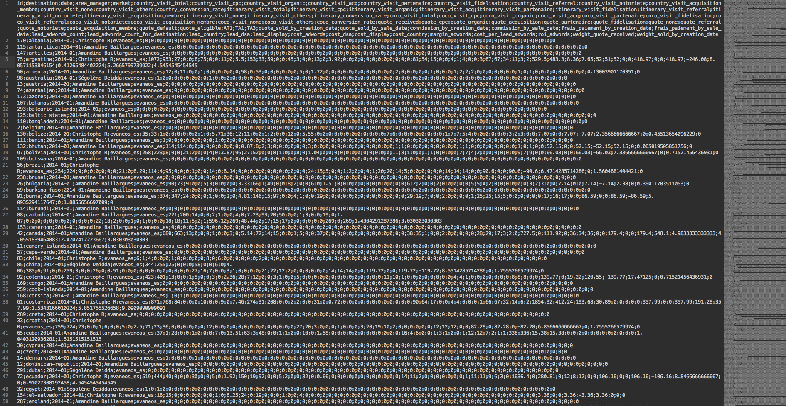
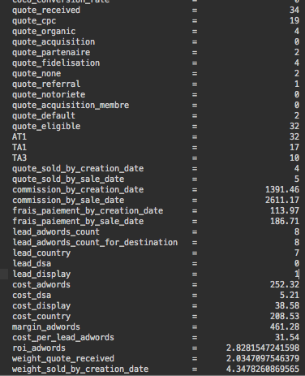

Specification Pattern
(and friends)par l'exemple : Country Manager Board
2015-12-03 by Olivier Madre / @NGTerenas
A quoi ça sert ?
- Transformer n'importe quelle règle métier en une classe simple et réutilisable
- Aggréger des règles métiers pour former des règles complexes
En UML :

Merci :(
En pseudo-code :
interface Specification<T>
{
public function isSatisfiedBy(T object) : boolean
public function and(Specification<T> specification) : Specification<T>
public function or(Specification<T> specification) : Specification<T>
public function not() : Specification<T>
}
Abstract base class
abstract class AbstractSpecification<T>
{
abstract public function isSatisfiedBy(T object) : boolean
public function and(Specification<T> specification) : Specification<T>
{
return new AndOperator<T>(this, specification);
}
public function or(Specification<T> specification) : Specification<T>
{
return new OrOperator<T>(this, specification);
}
public function not() : Specification<T>
{
return new NotOperator<T>(this);
}
}
Quand ?
- Posez-vous la question au 2nd if que vous écrivez dans la même méthode !
Country Manager Board
Un outil d'agrégation de données
Input
- Google Analytics
- Google Adwords
- PostgreSQL
Output
Output <3
In the middle :
SPECIFICATION PATTERN
and friends...
Une règle métier
class IsQuoteSentToAgent extends AbstractSpecification<Quote>
{
public function isSatisfiedBy(Quote quote) : boolean
{
return quote.sent();
}
}
Not so useful so far...
Plus compliqué
Dans l'app, colonne "quote_eligible"
- Elle doit être transmise à l'agent
- Ne doit pas être supprimée
- Ne doit pas être inadequate
quoteToTest = QuoteRepository.get(random(1, 1000000));
spec1 = new IsQuoteSentToAgent();
spec2 = new IsQuoteDeleted().not();
spec3 = new IsQuoteStatus(QuoteStateEnum.INADEQUATE).not();
spec = spec1.and(spec2).and(spec3);
boolean result = spec.isSatisfiedBy(quoteToTest);
Easy peasy
Réutiliser un même jeu de règles ?
- Une méthode dans une factory
- Un fichier de config
Specification spec = SpecificationFactory.getSpec('quote_eligible');
// ou
Specification spec = SpecificationFactory.getQuoteEligible();
Plus complexe
Carlos :
"Je veux le nombre de quotes par canal d'acquisition"
"Je veux le nombre total de quotes tous canaux confondus"
"Je veux le nombre de quotes qui ne proviennent pas de ces canaux"
D'abord les spec
class IsFromCPC extends AbstractSpecification<Quote>
{
public function isSatisfiedBy(Quote quote) : boolean
{
return quote.getAnalyticsData().getSource() === 'cpc';
}
}
// x15, parfois c'est plus complexe
// en fonction du marché, des typos, etc...
Specification Dispatcher v1
class SpecificationDispatcher<T>
{
public function countPerSpecification(
T[] objects,
Map<String, Specification<T>> specifications
) : Map<String, Integer>
public function countTotal(
T[] objects,
Map<String, Specification<T>> specifications
) : int
public function objectPerSpecification(
T[] objects,
Map<String, Specification<T>> specifications
) : Map<String, T[]>
public function objectTotal(
T[] objects,
Map<String, Specification<T>> specifications
) : T[]
}
Peut mieux faire...
Specification Dispatcher v2
class SpecificationDispatcher<T>
{
public function addSpecification(String name, Specification<T> spec) : SpecificationDispatcher<T>
public function dispatch(T[] objects, DispatchStrategy strategy) : mixed // can do better here
}
interface DispatchStrategy
{
public function dispatch(
T[] objects,
Map<String, Specification<T>> specifications
) : mixed
}
With some Strategy pattern, and PHP being kind with strict typing
Exemple de strategy
class DispatchObjectPerSpec implements DispatchStrategy
{
public function dispatch(T[] objects, Map<String, Specification<T>> specifications) : mixed
{
// creation de l'objet de sortie
Map<String, T[]> result = new HashMap<String, T[]>();
// initialisation des clefs
foreach (specName in specifications.keySet()) {
result.put(specName, new List<T>());
}
// pour chaque objet, on cherche la spec qui match, on l'associe, et on passe au suivant
foreach (object in objects) {
foreach (spec, specName in specs) {
if (spec.isSatisfiedBy(object)) {
result.get(specName).push(object);
break;
}
}
}
return result;
}
}
Glue everything
Configuration
Quotes[] quotes = QuoteRepository.findMany([1,2,3,4]);
SpecificationDispatcher dispatcher = new SpecificationDispatcher();
dispatcher.addSpecification('cpc-spec', SpecFactory.get('cpc-spec'));
dispatcher.addSpecification('seo-spec', SpecFactory.get('seo-spec'));
Execution
Map<String, Integer> quotesPerSpec = dispatcher.dispatch(quotes, new DispatchReturnCountPerSpecification());
Map<String, Quote[]> quotesPerSpec = dispatcher.dispatch(quotes, new DispatchReturnObjectsPerSpecification());
Quote[] quotes = dispatcher.dispatch(quotes, new DispatchReturnMatchingObjects());
Integer totalMatch = dispatcher.dispatch(quotes, new DispatchReturnCountTotal());
Integer totalNotMatching = dispatcher.dispatch(quotes, new DispatchReturnCountTotalNotMatchingAnySpec());
Le dispatcher est souvent réutilisé, factorisons le !
SpecificationDispatcher dispatcher = DispatcherFactory.get('quote-per-canal');
// ou
SpecificationDispatcher dispatcher = new QuoteDispatcherFactory().get();
// ou
SpecificationDispatcher dispatcher = DispatcherFactory.getQuotePerCanal();
at this point, I don't really care
PROs
- Quand on a de multiples règles métiers
- Quand elles changent tout le temps
- Lisibilité
- Réutilisabilité
CONs
- Overkill au début
- Beaucoup de classes
- Pas de Generic en PHP
- Le spec pattern s'applique sur des objets (voir Rulerz pour des criterias Doctrine)